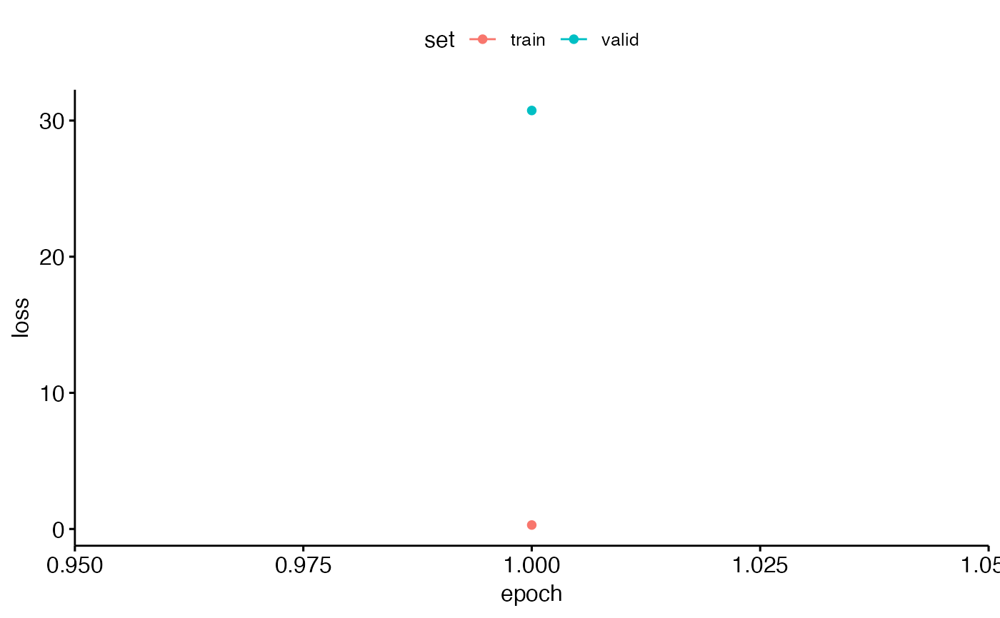

This function trains Convolutional Neural Network (CNN) models, such as AlexNet, VGG16, VGG19, ResNet18, ResNet50, or ResNet152, on a given dataset. The trained model is saved along with metadata for further usage.
train_CNN_binary(
input.data.path,
test.data,
architecture,
noise.weight = 0.5,
brightness = 0,
contrast = 0,
saturation = 0,
unfreeze.param = TRUE,
batch_size = 32,
learning_rate,
save.model = FALSE,
epoch.iterations = 1,
early.stop = "yes",
output.base.path = "data/",
trainingfolder,
list.thresholds = seq(0.1, 1, 0.1),
positive.class = "Gibbons",
negative.class = "Noise"
)Character. The path to the folder containing the training data.
Character. The path to the folder containing the test data.
Character. The CNN architecture to use ('alexnet', 'vgg16', 'vgg19', 'resnet18', 'resnet50', or 'resnet152').
Numeric. Assigned weight for the noise class. Default is 0.5.
Numeric. Brightness adjustment factor for color jitter. A value of 0 means no change. Higher values increase brightness. Default is 0.
Numeric. Contrast adjustment factor for color jitter. A value of 0 means no change. Higher values increase contrast. Default is 0.
Numeric. Saturation adjustment factor for color jitter. A value of 0 means no change. Higher values increase color saturation. Default is 0.
Logical. Determines whether to unfreeze all layers of the pretrained CNN for retraining. Default is TRUE.
Numeric. Batch size for training the model. Default is 32.
Numeric. The learning rate for training the model.
Logical. Whether to save the trained model for future use. Default is FALSE.
Numeric. The number of epochs for training the model. Default is 1.
Character. Determines whether early stopping should be applied or not. Options: "yes" or "no". Default is 'yes'.
Character. The base path where the output files should be saved. Default is 'data/'.
Character. A descriptor of the training data used for naming output files.
Numerical list indicating thresholds. Default is seq(0.1,1,.1).
Character. The name of the positive class label. Default is 'Gibbons'.
Character. The name of the negative class label. Default is 'Noise'.
The function generates multiple output files, including:
Trained Models: If save.model = TRUE outputs saved model files (.pt) for specified architectures.
Training Logs: logs_model.csv containing logs of training sessions, including loss and accuracy metrics.
Metadata: model_metadata.csv contains metadata from training run
Model predictions: Saved for each architecture in output_TrainedModel_testdata.csv
Performance Evaluation: Saves .csv summarizing performance for each architecture in nested folder in output.base.path 'performance_tables'.
Requires train, valid, and test folders created using created using 'spectrogram_images'
nn_module and other torch functions.
{
input.data.path <- system.file("extdata", "binary/", package = "gibbonNetR")
test.data <- system.file("extdata", "binary/test/", package = "gibbonNetR")
result <- train_CNN_binary(
input.data.path = input.data.path,
test.data = test.data,
architecture = "alexnet", # Choose architecture
unfreeze.param = TRUE,
batch_size = 6,
learning_rate = 0.001,
epoch.iterations = 1, # Or any other list of integer epochs
early.stop = "yes",
output.base.path = paste(tempdir(), "/", sep = ""),
trainingfolder = "test_binary"
)
print(result)
}
#> Training alexnet
#> Postive class = Gibbons and Negative class = Noise
#> Warning: Some torch operators might not yet be implemented for the MPS device. A
#> temporary fix is to set the `PYTORCH_ENABLE_MPS_FALLBACK=1` to use the CPU as a
#> fall back for those operators:
#> ℹ Add `PYTORCH_ENABLE_MPS_FALLBACK=1` to your `.Renviron` file, for example use
#> `usethis::edit_r_environ()`.
#> ✖ Using `Sys.setenv()` doesn't work because the env var must be set before R
#> starts.
#> Epoch 1/1
#> Train metrics: Loss: 0.292 - Acc: 0.8333
#> Valid metrics: Loss: 30.739 - Acc: 0.4444
#> `geom_line()`: Each group consists of only one observation.
#> ℹ Do you need to adjust the group aesthetic?
#> Warning: Some torch operators might not yet be implemented for the MPS device. A
#> temporary fix is to set the `PYTORCH_ENABLE_MPS_FALLBACK=1` to use the CPU as a
#> fall back for those operators:
#> ℹ Add `PYTORCH_ENABLE_MPS_FALLBACK=1` to your `.Renviron` file, for example use
#> `usethis::edit_r_environ()`.
#> ✖ Using `Sys.setenv()` doesn't work because the env var must be set before R
#> starts.
#> Here are actual class labels, if they do not contain the positive or negative class cannot evaluate model performance: GibbonsHere are actual class labels, if they do not contain the positive or negative class cannot evaluate model performance: Noise

#> NULL